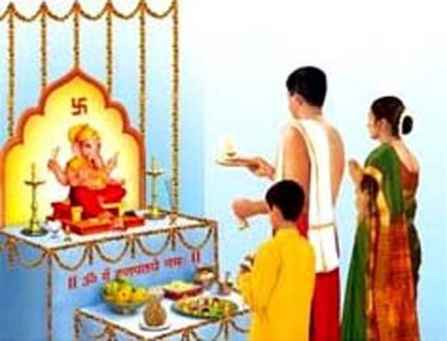

मूर्तिपूजा करण्याचे कारण.
प्राणादिभिरनंतैश्च भावरेतविकल्पितः । मायैषा तस्य देवस्य यया संमोहितः स्वयम् ॥ १॥
यं भावं दर्शयेद्यस्य तं भावं स तु पश्यति । तं चावति स भुत्वाऽसौ तद्ग्रः समुपैति तम् ॥ २॥
अर्थ-तो (ईश्वर) प्राण आदि अनेक रूपांचा आहे असे काहींनी कल्पिले आहे हा सर्व या देवाच्या मायेचा प्रभाव आहे. ती माया कधी कधी त्यालाच मोह पाढते ॥ १ ॥
ईश्वर असा असा आहे असे कोणी गुरूने त्यास दिसतो. ईश्वर त्या रूपाचा होऊन त्या भक्ताचे रक्षण करतो व त्या बुद्धीने भक्ति करणारा त्याप्रत पावतो ॥ २ ॥
असे म्हणतात. म्हणून काही भाविक लोक देवाच्या वाटेल तशा मूर्ति बनवून, त्यांची पोडशोपचार किंवा पंचोपचार पूजा करतात. ते सोळा उप चार असे
पूजेच्या षोडशोपचारांची नावें.
अवाहनासने पाद्यमर्ध्यमाचमनीयकम् । स्नानंवत्रोपवीते च गधं पुष्पेच धूपकम् ।
दीपरान्न नमस्कारः प्रदक्षिणा विसर्जने ॥१॥
अर्थ --
१). आवाहन (इष्ट देवतेस या असे बोलावणे).
२). असन (बस प्यास बैठक देणे)
३). पाद्य (पाय धुण्यास पाणी देणे).
४). अर्ध्य (हात धुण्यास पाणी देणे).
५). आचमन (हातावर थोडे पाणी घेऊन पिणे)
६). स्नान (आंग धुणे)
७). बल (नेसण्यास व पांघरण्यास कपडे देणे ).
८).उपचीत (जानवें देणे).
९) गंध (चंदन लावणे).
१०) पुरुष (फुले देणे).
११) धूप (कद जाळणे).
१२) दीप (फुलवात लावणे).
१३) नैवेद्य (भोजन देणे).
१४) प्रदक्षिणा (फेर घालणे).
१५) नमस्कार (पाया पडणे)
१६) विसर्जन (पूजा आटपणे).
पूजेच्या पंचोपचाराची नावे
गंधपुष्पधूपदोपी नैवेद्यं पंचमं स्मृतं । गंध, पुष्प, धूप, दीप, नैवेद्य हे पाच उपचार.
" कोणी हा पांचच उप वारांनी बहुतेक पूजा करितात; त्यास ' पंचोपचार पूजा' म्हणतात.
पूजेचें साहित्य (सामान).
देवपूजेसाठी मुद्ध उदकाने भरलेला कलया ( गडवा), शंख घंटा, दिवा देव्हान्यावर एक मंडपी, आचमनपी, पंचपात्र, ताम्हण, गंध, धुतलेल्या शुभ अक्षता, फुले, बिल्वपत्र, (बेल), तुळशोपत्रे व मंजिरे, हळदीची पूड, कुंकू, बुक्का, ऊद किंवा उदबत्ती, फुलवाती, कापूर, पानाचा विडा, सुपारी, दही, दूध, तूप,